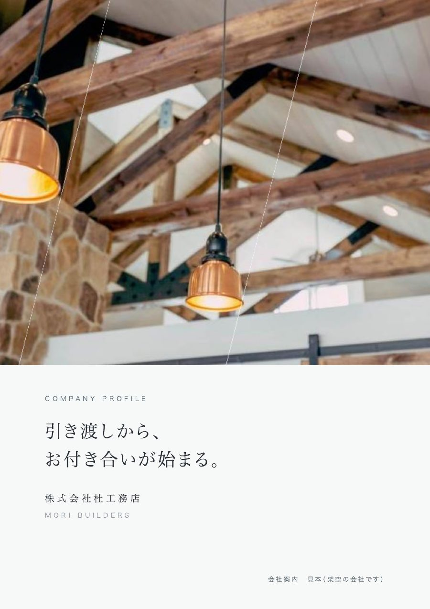
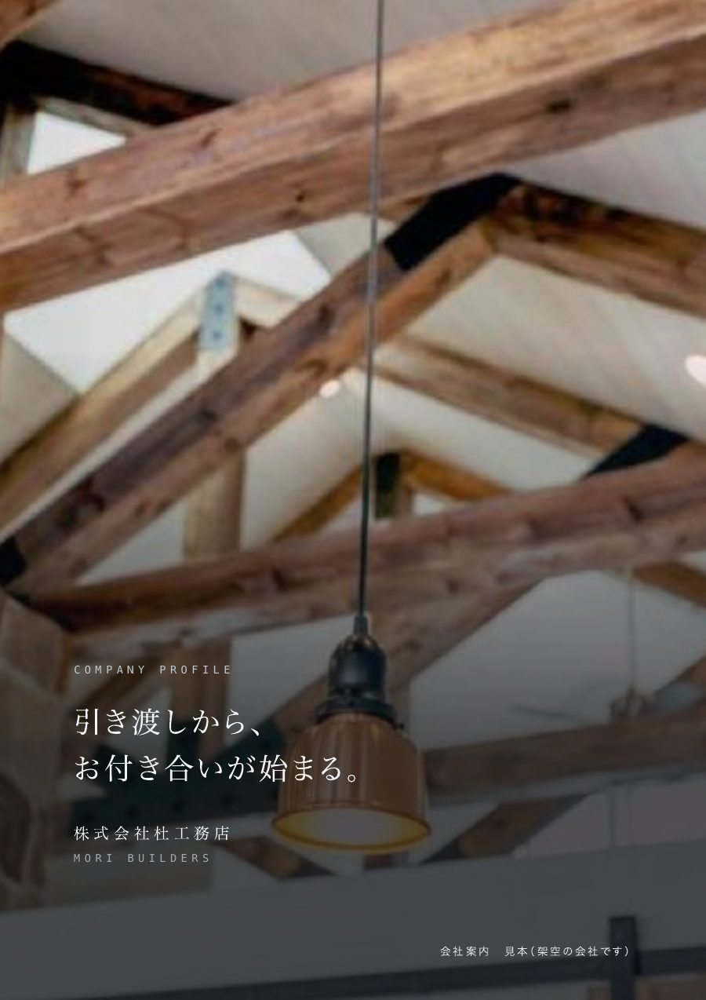
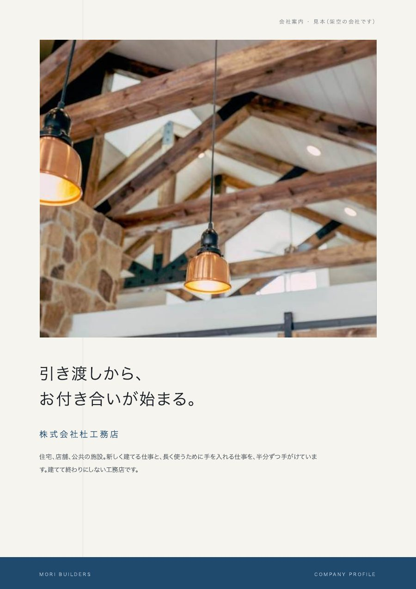
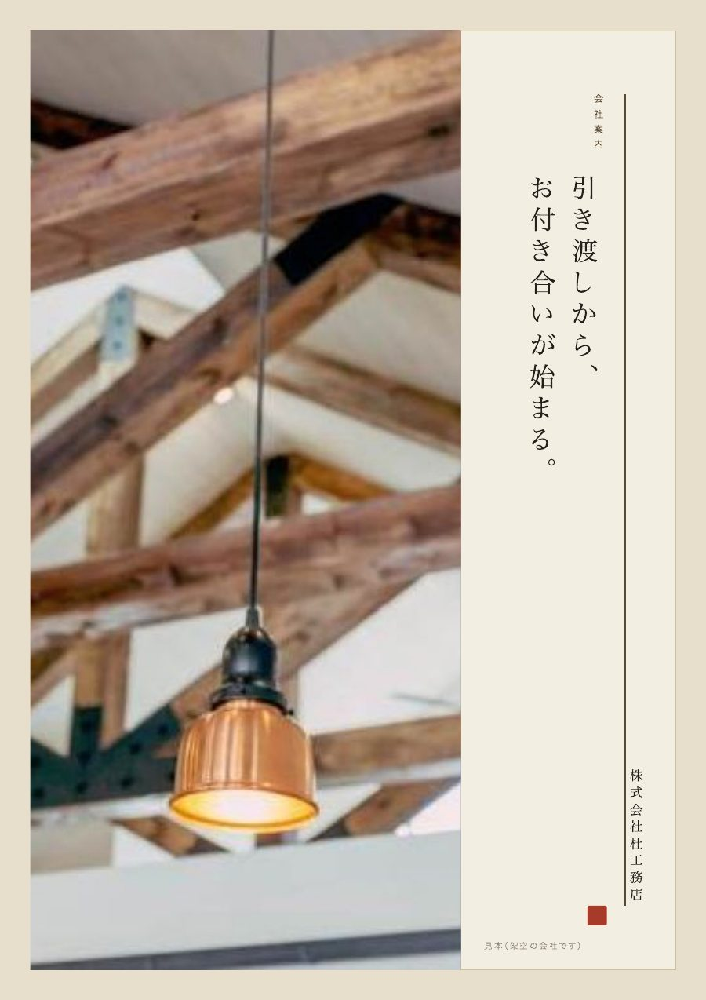

MORIKOSHA / BROCHURE
仕事の輪郭を、
手渡せる一冊に。
ホームページと同じ五つのデザインから。会社の仕事や強みをA4・4ページの会社案内にまとめます。
48,000 円（税込）

ホームページと同じ5つの案で、
手渡せる会社案内を。
A4・4ページの会社案内です（表紙／仕事の内容／選ばれる理由とごあいさつ／会社概要）。ホームページの見本帳と同じ5つの案（淡・玄・雅・粋・理）から近いものを選び、内容をご相談のうえ原稿と写真を送っていただくと、御社の内容に直して PDF でお渡しします。営業先や採用の面接で手渡す一冊に。
- 料金A4・4ページ48,000円（税込）含まれるもの：5案から選ぶ・御社の内容に直す・PDF と印刷用のデータ。印刷代行は、10部ごとに＋8,000円（税込）
- デザイン5つの案淡・玄・雅・粋・理。ホームページと同じ案です
- 納期2週間ほど写真と資料をいただいてから
選ぶと、下の5案の表紙がその業種の見本に変わります（24業種）。
② 5案を見比べる
横にずらすと5案を見られます ← →

淡（あわい）雨に洗われた白と、雨脚。設計事務所や造園業など、丁寧さや情緒を静かに伝えたい会社に向いています。 
玄（げん）写真を、闇に沈めて。設計事務所・塗装・建築（設計）など、意匠性と静かな凄みで選ばれたい会社に向いています。 雅（みやび）灯のような墨に、金の細線。創業の古い建設会社・造園・社寺関係など、歴史と格式を前に出したい会社に向いています。 
粋（いき）藍の、細い縦線だけ。電気工事・設備・測量・土木施工など、段取りの正確さと反応の速さで信頼を得る仕事に向いています。 
理（り）一本の筋を、通す。代々続く建築・土木・造園の会社や、社寺・石材・表具など、受け継いだ技術を仕事にしている方に向いています。
見本の社名・人名・住所・電話番号は、すべて架空です。
中のページの例
どの業種も同じ構成です。下は雅・建築の例です。画像を押すと、新しいタブで大きく見られます。

頼み方の流れ
ご相談と原稿
まずメールでご相談ください。ご依頼が決まったら、会社名・仕事の内容・ごあいさつなど、書いていただく項目をお送りします。
写真
現場や社屋、仕事の様子の写真をお送りいただきます。
初稿
写真と資料をいただいてから2週間ほどで、選んだ案に御社の内容を入れて PDF でお渡しします。
直し
お渡ししたあと2週間のご確認の期間中は、1回に限り無償で直します。
納品
PDF と印刷用のデータでお渡しします。
よくある質問
どのくらいでできますか？
写真と資料をいただいてから、2週間ほどで初稿をお渡しします。
直しはできますか？
お渡ししたあと2週間のご確認の期間中は、1回に限り無償で直します。
印刷もお願いできますか？
できます。10部ごとに＋8,000円（税込）でお受けします。印刷の前にお支払いをお願いします。